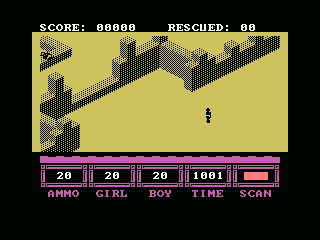
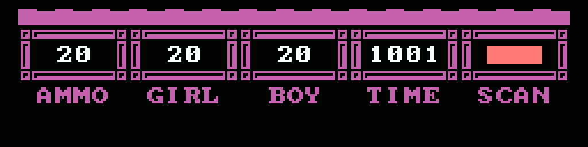

ANT ATTACK
The 1983 Quicksilva Spectrum game converted into a 64 KB MSX cartridge: native SCREEN 2, keyboard, menus and PSG, while retaining the original game engine.
The patch in numbers
13,974bytes of IPS
64 KBASCII16 cartridge
10levels
0ROM images distributed
Running on MSX


openMSX captures of the documented build on a Philips VG-8020 profile. They demonstrate the display, not real-hardware certification.
What the conversion adds
- A native SCREEN 2 layer with a tile shadow that uploads only changed cells.
- Rotational or directional movement, key redefinition and four grenade ranges.
- A corrected camera, the original yellow-and-black city and a redesigned HUD.
- The Spectrum beeper sequences adapted to the PSG, with non-blocking playback.
- The reference disassembly and the complete patch sources.
Araubi completed all ten levels manually. Automated tests also cover camera limits, controls, damage, rescues, HUD, timing and PSG register sequences.
Apply the IPS
Supply your own Ant_Attack_1983_Quicksilva.z80 snapshot with SHA-256 aad0783b...32f1cd. The normaliser creates the deterministic base expected by the IPS:
python tools\normalize.py python tools\make_ips.py apply build\Ant_Attack_MSX1_base.rom patch\Ant_Attack_MSX1.ips build\Ant_Attack_MSX1.rom
The result must have SHA-256 0cd4bb3a...54b1a. No snapshot or ROM is distributed.